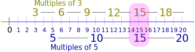
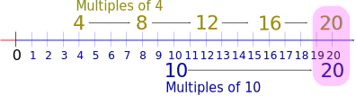

Least Common Multiple
The smallest positive number that is a multiple of two or more numbers.
Let's start with an Example ...
Least Common Multiple of 3 and 5:
List the Multiples of each number,
The multiples of 3 are 3, 6, 9, 12, 15, 18, ... etc
The multiples of 5 are 5, 10, 15, 20, 25, ... etc
Find the first Common (same) value:

The Least Common Multiple of 3 and 5 is 15
(15 is a multiple of both 3 and 5, and is the smallest number like that.)
So ... what is a "Multiple" ?
We get a multiple of a number when we multiply it by another number. Such as multiplying by 1, 2, 3, 4, 5, etc, but not zero. Just like the multiplication table.
Here are some examples:
| The multiples of 4 are: 4,8,12,16,20,24,28,32,36,40,44,... |
| The multiples of 5 are: 5,10,15,20,25,30,35,40,45,50,... |
What is a "Common Multiple" ?
Say we have listed the first few multiples of 4 and 5: the common multiples are those that are found in both lists:
| The multiples of 4 are: 4,8,12,16,20,24,28,32,36,40,44,... |
| The multiples of 5 are: 5,10,15,20,25,30,35,40,45,50,... |
Notice that 20 and 40 appear in both lists?
So, the common multiples of 4 and 5 are: 20, 40, (and 60, 80, etc ..., too)
What is the "Least Common Multiple" ?
It is simply the smallest of the common multiples.
In our previous example, the smallest of the common multiples is 20 ...
... so the Least Common Multiple of 4 and 5 is 20.
Finding the Least Common Multiple
List the multiples of the numbers until we get our first match.
Example: Find the least common multiple of 4 and 10:
The multiples of 4 are: 4, 8, 12, 16, 20, ...
and the multiples of 10 are: 10, 20, ...
Aha! there is a match at 20. It looks like this:

So the least common multiple of 4 and 10 is 20
Example: Find the least common multiple of 6 and 15:
The multiples of 6 are: 6, 12, 18, 24, 30, ...
and the multiples of 15 are: 15, 30, ...
There is a match at 30
So the least common multiple of 6 and 15 is 30
More than 2 Numbers
We can also find the least common multiple of three (or more) numbers.
Example: Find the least common multiple of 4, 6, and 8
Multiples of 4 are: 4, 8, 12, 16, 20, 24, 28, 32, 36, ...
Multiples of 6 are: 6, 12, 18, 24, 30, 36, ...
Multiples of 8 are: 8, 16, 24, 32, 40, ....
So 24 is the least common multiple (I can't find a smaller one!)
Hint: We can have smaller lists for the bigger numbers.
Least Common Multiple Tool
There is another method: the Least Common Multiple Tool does it automatically. (Yes, we waited until the end to tell you!)